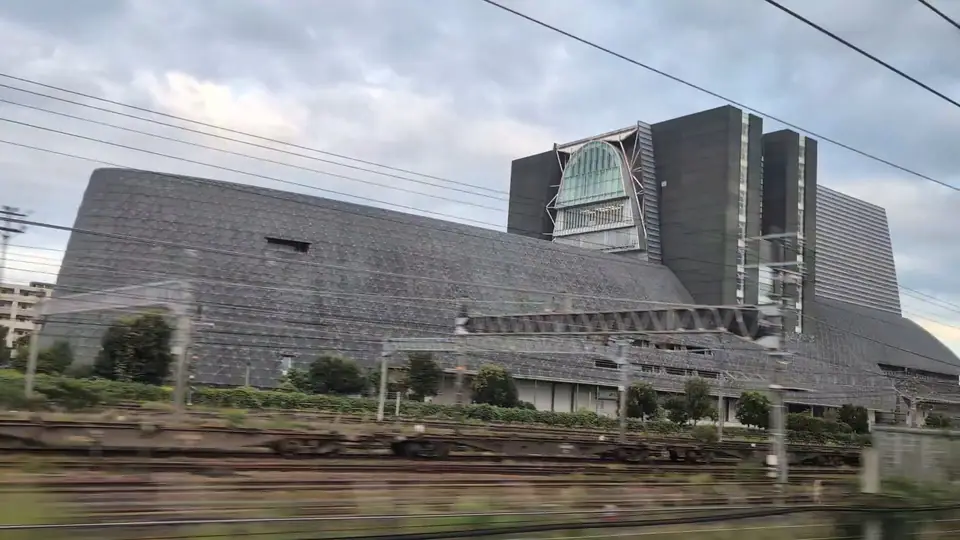
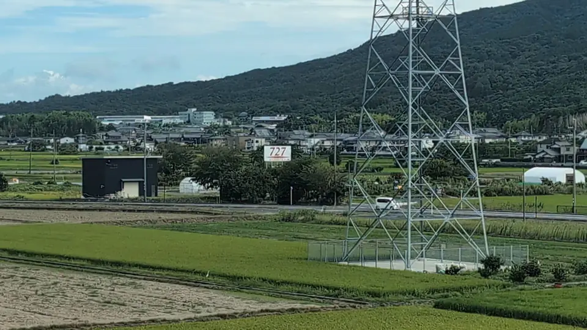

BEFORE THE RIDE01
乗る列車を、ひとつ選ぶ。
出発駅と列車を選ぶと、40景の見えるころが旅の順に並びます。
列車を選んでみるTokaido Shinkansen Window Guide
富士山も、城も、湖も、ふしぎな看板も。 東海道新幹線の40の車窓を、あなたの列車の時刻と座席側に合わせて案内します。
無料 登録不要 ブラウザですぐ使える

More than Mt. Fuji
相模湾、茶畑、浜名湖、城、建築、線路ぎわの看板。いつもの移動に、40の見どころがあります。
MOUNT FUJI · SEAT E富士山
 LAKE · SEAT A浜名湖
LAKE · SEAT A浜名湖
 CASTLE · SEAT E掛川城
CASTLE · SEAT E掛川城

ARCHITECTURE · SEAT Aグランシップ
TRACKSIDE SIGN727看板掲載写真 撮影：michikusa
One ride, three moments
機能を覚える必要はありません。ひとつの旅の流れに沿って、車窓の楽しみが続きます。
出発駅と列車を選ぶと、40景の見えるころが旅の順に並びます。
列車を選んでみる現在地から次の車窓を予測。地図・音声・カウントダウンで、窓を見る準備ができます。
デモ走行で試す（α版）「見えた」を押すと、車窓スタンプが残ります。次の旅で続きを集められます。
車窓スタンプを見るLook up from your screen
見えるころがわかれば、ずっと画面を見張らなくていい。このガイドの役目は、あなたの視線を窓へ戻すことです。
撮影：michikusa
Window, even off the train
天気を調べる。墨絵を眺める。写真の走馬灯に身をまかせる。窓から始まった旅を、別のかたちでも楽しめます。
時刻や見え方は、運行状況・天候・座席位置により前後します。少し早めに窓の外を見てください。
Your next window journey
列車をひとつ選ぶだけ。見えるころと座席側を、あなたの旅に合わせて案内します。